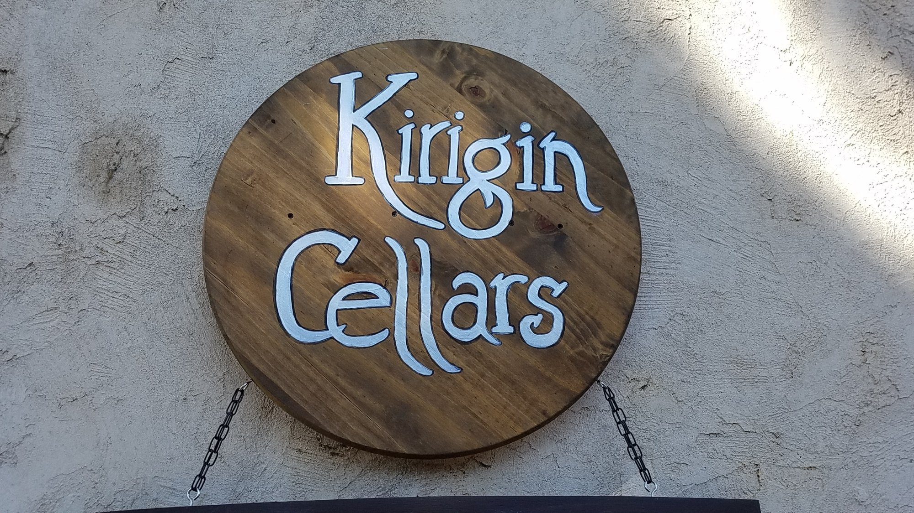
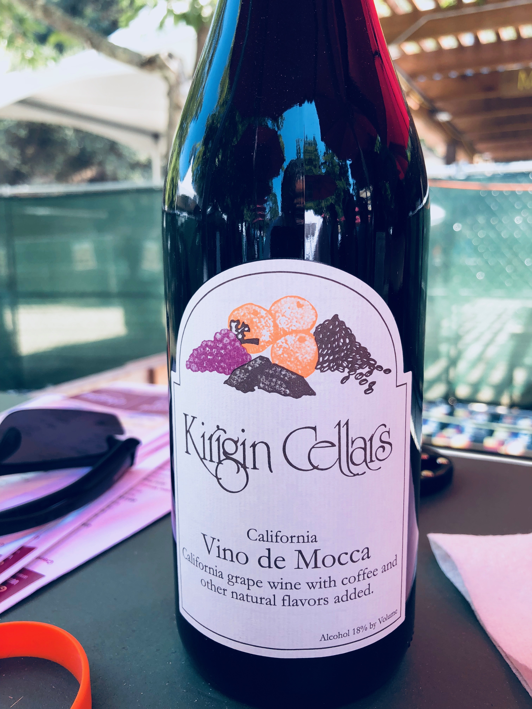
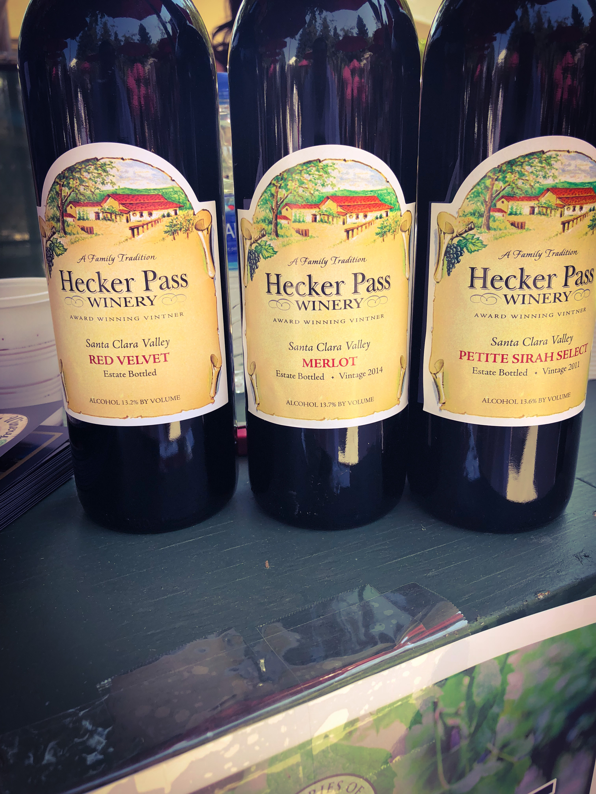

Santa Clara is the most populous county in the Bay Area. Also known as Silicon Valley, it’s a hotbed for the world’s leading technology companies, including internet, computing and renewable energy. An area with rich soils and Mediterranean climate, Native Americans named it the “Valley of the Heart’s Delight.
Better known as “Silicon Valley”, the Santa Clara Valley has a long history of wine-making dating back to the Spanish Missions. Today, a few persevering wineries carry on the tradition and take advantage of the southern valley’s soils and climate to grow bold, warm-climate varieties.
The growth of the technology sector in the region saw the area christened as Silicon Valley, and older Almaden Valley vineyards were uprooted to make way for urban sprawl. Today the majority of the remaining vineyards are found between the Diablo Mountains in Contra Costa and the Santa Cruz Mountains south of San Jose near Morgan Hill and Gilroy, with some in the foothills of the Santa Cruz Mountains near Saratoga. A collaboration between the cities of Gilroy, Morgan Hill, and Santa Clara County, along with the Wineries of Santa Clara Valley, formed the "Santa Clara Valley Wine Trail" to connect the many wineries and aid in agritourism.
The Gilroy Garlic Festival is one of the largest food festivals in the United States, held annually in Gilroy, California on the last full weekend in July at Christmas Hill Park. The 40th Garlic Festival was held on July 27–29, 2018.
The festival showcases some of the best wineries Santa Clara Valley wine trail has to offer. Team Wine Snob has been attending the festival since 2007, and each year we get to talk to wine vendors and get to taste the wines being showcased at the festival. We take note of each wine we taste going from stand to stand and at the end of the day we talk about which vineyard stood out and which wine we enjoyed drinking, it's really an event I look forward to every year!
Kirigin Cellars
Along the new south county Wine Trail, Kirigin has established itself as one of the new, major players in this wine country. It's brand new facilities with a huge, new wine tasting building surrounded by acres of beautifully manicured soccer and cricket fields is impressive to say the least. But, they have kept the original tasting room in its old, quaint simplicity, where they let you taste for free and they are known for their special "chocolate" wines! A wonderful stop on Santa Clara Valley Wine Trail.
At Kirigin Cellars, one wine that stood out, was this dessert wine, infused with natural flavors: “Coffee, Chocolate”. This wine is sure to make you say “Wow!” Without a doubt, this one is one of our favorties! Hints of Coffee on the nose, with hints of chocolate on the pallette, or vise versa, it's just an amazing wine to try with a scoop of Vanilla ice cream!
Hecker Pass Winery
Hecker pass is a winery we have yet to visit, but every year, we get a chance to try their wines at the Gilroy Garlic Festival. The three in particular are their red velvet, Merlot and the Petite Sirah Select
 Hecker Pass WineryWine barrel planters along the roadway lead you into the old winery at Hecker Pass. The facility goes back 30-plus years making Italian-style wines, including sweet dessert wines. Mario, a third-generation winemaker, came to California and established the winery in 1959 after learning the art of winemaking in Cosenza, Italy. Mario chose the southern Santa Clara Valley for its weather patterns of hot summer days and cool nights. All the Hecker Pass wines are made from estate-grown grapes.
The wood-framed winery and fermenting room were built in 1972. Their grapes are handpicked and naturally fermented in wood tanks, then pressed in an old-style wooden basket press. Wines made include a California Chianti, Petite Syrah, Cabernet Sauvignon, Merlot, Zinfandel, Carignane, and Grenache. On the dessert side are a Muscat wine, Ruby Port, Marsala and a Cream Sherry.